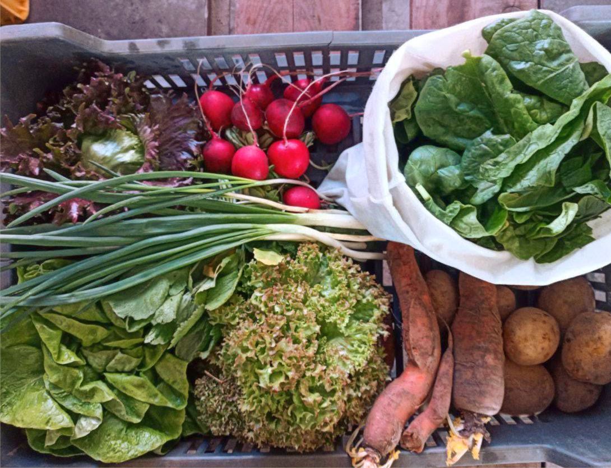

A közösségi mezőgazdálkodás a fogyasztók és a gazda hosszútávú kölcsönös elköteleződésére épül, melyben a termés és a kockázat megoszlik.
A termelő a közösséggel kötött megállapodása szerint gazdálkodik – hazánkban ökológiai módszerekkel. A tagok pedig rendszeresen fizetendő átalánydíjért cserébe hetente átveszik részesedésüket (ez lehet zöldség, gyümölcs, hús vagy tojás) az átadóponton.

Mit jelent a közösség által támogatott mezőgazdaság?
szolidaritás a kistermelőkkel,
a nagy gazdasági értékesítési láncok lerövidítése, és a globális gazdasági trendek elutasítása,
közösségi, azonnal alkalmazható alternatív beszerzési mód, a gazda és tagok között nincs harmadik fél, vagy közvetítő,
elköteleződés: a kockázat és az eredmények megosztása a gazdával,
a termelő és a vásárló csoport elköteleződése a gazdaságban termelt zöldség megvásárlására,
a gazda garantálja az egészséges, vegyszermentes, biotermelésből a zöldséget,
a vásárlók a termelési idény elején megelőlegezik a gazda előkészítő munkáját, így a gazda a vásárlócsoport igényeihez alkalmazkodva tud tervezni,
az előre meghatározott és befizetett összegért cserébe a szezontól és terméstől függően kapja a vásárlóközösség a zöldséges dobozát, így a vásárlók szokásai is alakulnak: „abból főzünk ami van” – fejleszti a kreativítást a főzésben,
a vásárlóközösség a dobozátvevő napokon (csütörtök) találkozik a gazdával és a többi tagokkal (recept- és sok fontos élménycserebere napja is egyben), kialakul a közösségi élet, és egy újfajta szemléletmód